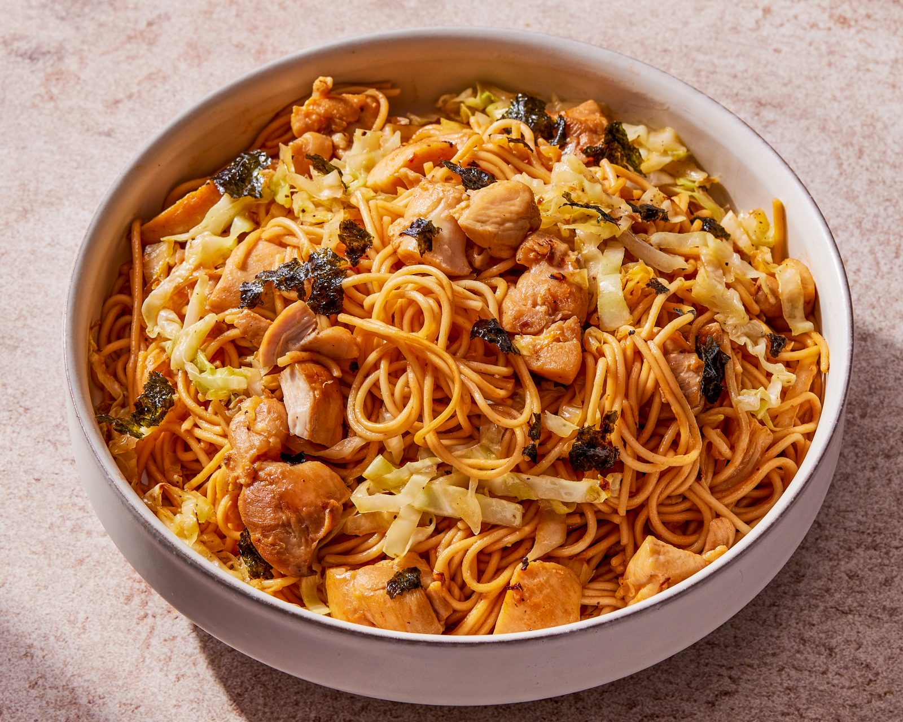

Home
Chicken Yakisoba

Description
Yakisoba is a Japanese stir-fried noodle dish. It's made with
wheat-based noodles, meat, and vegetables, stir-fried in
a sweet and savory sauce.
Ingredients
Sauce
- 1⁄4 cup low sodium soy sauce
- 1 tbsp white sugar
- 1f⁄8 tsp red pepper flakes
- 1⁄4 cup rice vinegar
- 1⁄4 cup water
Noodles
- 2 5.6 oz pkg of yakisoba noodles
- 1 tbsp vegetable oil
- 1 small onion, sliced
- 2 scallions, chopped
- 1 cup shredded cabbage